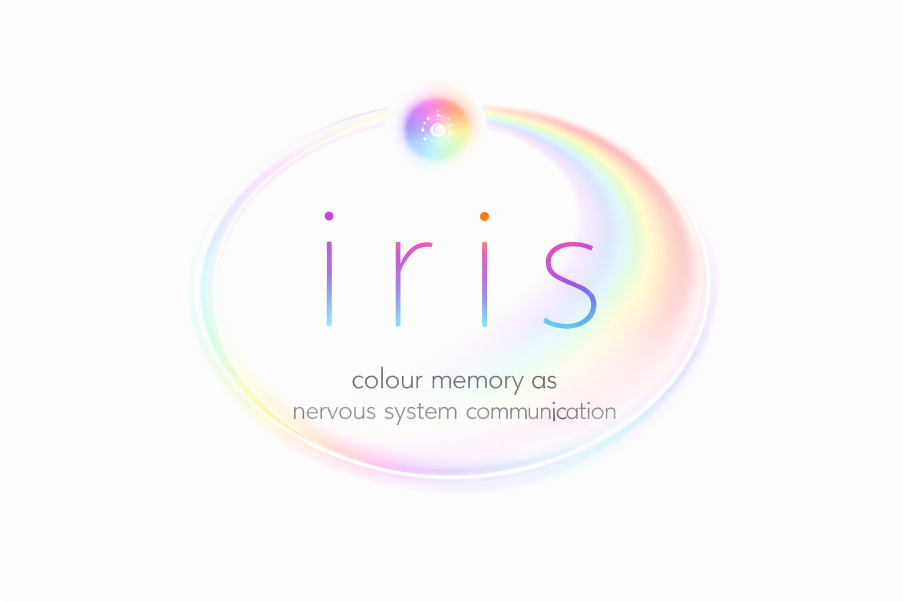

The duration of each iris session is individually determined based on your condition and can range from 11 to 25 minutes. During this time, specially prepared color sequences will appear on your device’s screen at precise frequencies. Your only task is to look calmly at the screen. Music or audiobooks are welcome — pleasant sound is even encouraged.
By interacting with the session visuals, we obtain data on your body’s resource status and highlight areas needing priority attention. These insights reveal both strengths and weaknesses, guiding where health restoration should begin. The personalized spectrum session works to reestablish strong connections between the brain and organs in need of support — helping to restore their natural function.
Over time, the session helps restore the qualitative interconnection of all structures of the body, leading to improved physical and emotional health. Integration continues beyond the screen — your nervous system begins to remember clarity.
No special licenses or permits are required to use the “Wanderer” virtual scanner, as it is not classified as medical equipment or software (per RoszdravNadzor, “On Software,” February 13, 2020).
By accessing the iris sessions or software inspired by the Wanderer system, you agree to follow all provided usage recommendations. Misuse or disregard of these guidelines is solely the user’s responsibility.
Note: Wanderer is psychological software. It provides insight into one’s psychological and physiological condition but is not a diagnostic tool and does not prescribe or replace medical treatment.